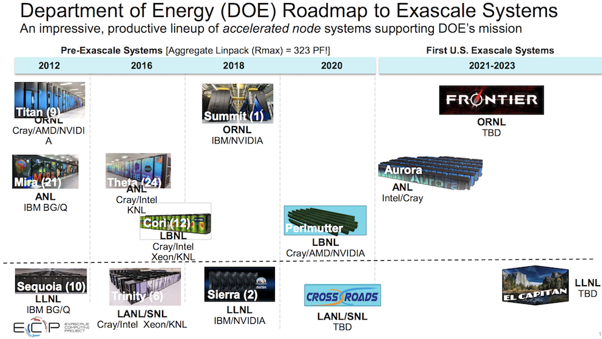

Introduction to GPUs in HPC
CSC Summerschool, 2019-07
HPC through the ages
- Achieving performance has been based on various strategies throughout the years
- Frequency, vectorization, multinode, multicore ...
- Now performance is mostly limited by power consumption
- Accelerators provide compute resources based on a very high level of parallelism to reach high performance at low relative power consumption
Accelerators
- Specialized parallel hardware for floating point operations
- Co-processors for traditional CPUs
- Based on highly parallel architectures
- Graphics processing units (GPU) have been the most common accelerators during the last few years
- Promises
- Very high performance per node
- Usually major rewrites of programs required
Accelerators share of 500 fastest systems (Top500)

US roadmap to Exascale

EU roadmap to Exascale

Lumi - Pre-exascale system in Finland
Accelerator model today
- Connected to CPUs via PCIe
- Local memory
- Smaller than main memory (32 GB in Puhti)
- Very high bandwidth (up to 900 GB/s)
- Latency high compared to compute performance
- Data must be copied over the PCIe bus
GPU architecture
- Designed for running tens of thousands of threads simultaneously on thousands of cores
- Very small penalty for switching threads
- Running large amounts of threads hides memory access penalties
- Very expensive to synchronize all threads
- Now Nvidia GPUs have close to monopoly in HPC - will change in next few years
GPU architecture: Nvidia Volta
- 80 streaming multi processor units (SM), each comprising many smaller Cuda cores
- 5120 single precision cores
- 2560 double precision cores
- 640 tensor cores
- Common L2 cache (6144 KB) for all multi processors
- HBM2 memory, typically 16 GB or 32 GB
GPU architecture: Nvidia Volta

GPU architecture: Nvidia Volta SM
- 64 single precision cores
- 32 double precision cores
- 64 integer cores
- 8 Tensore cores
- 128 KB memory block for L1 and shared memory
- 0 - 96 KB can be set to user managed shared memory
- The rest is L1
- 65536 registers - enables the GPU to run a very large number of threads
GPU architecture: warps
- All execution is done in terms of 32 threads, a warp
- In a warp 32 threads compute the same instruction on different data (SIMT)
- Warps are further collected into thread blocks; each executed on one SM
- In case of divergence (if...) computation is done one branch at a time

Challenges in using Accelerators
Applicability: Is your algorithm suitable for GPU?
Programmability: Is the programming effort acceptable?
Portability: Rapidly evolving ecosystem and incompatibilities between vendors.
Availability: Can you access a (large scale) system with GPUs?
Scalability: Can you scale the GPU software efficiently to several nodes?
Using GPUs
- Use existing GPU applications
- Use accelerated libraries
- Directive based methods
- Use lower level language
Easier, but more limited

More difficult, but more opportunities
Directive-based accelerator languages
- Annotating code to pinpoint accelerator-offloadable regions
- OpenACC standard created in Nov 2011
- Focus on optimizing productivity (reasonably good performance with minimal effort)
- Current standard is 2.7 (November 2018)
- Mostly Nvidia only
- OpenMP
- Earlier only threading for CPUs
- 4.5 also includes for the first time some support for accelerators
- 5.0 standard vastly improved
- Dominant directive approach in the future?
GPUs at CSC - Taito-GPU
- 12 nodes with
- 2 x K80 (Kepler), in total 4 GPUs each
- 2 x Haswell CPU, 24 cores in total
- 26 nodes with
GPUs at CSC - Puhti-AI
- In total 80 nodes with a total peak performance of 2.7 Petaflops
- Each node has
- Two latest generation Intel Xeon processors, code name Cascade Lake, with 20 cores each running at 2.1 GHz (Xeon Gold 6230)
- Four Nvidia Volta V100 GPUs with 32 GB of memory each
- 384 GB of main memory
- 3.2 TB of fast local storage
- Dual rail HDR100 interconnect network connectivity providing 200Gbps aggregate bandwidth
Summary
- HPC throughout the ages -- performance through parellelism
- Programming GPUs
- CUDA, HIP
- Directive based methods